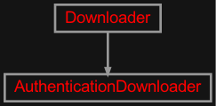
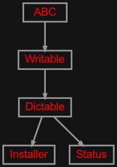
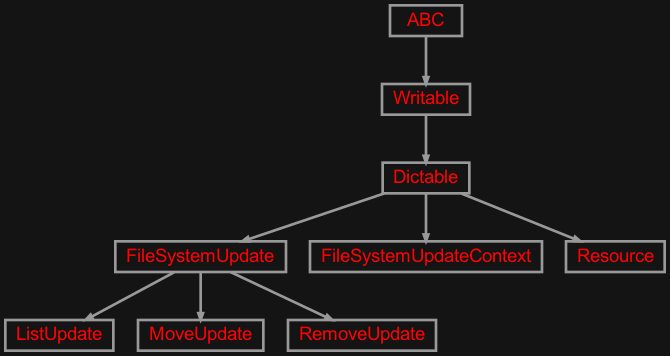

zensols.install package#
Submodules#
zensols.install.download#

Downloads files with a progress bar.
Inspired by this thread.
- class zensols.install.download.AuthenticationDownloader(use_progress_bar=True, skip_if_exists=True, mkdir=True, buffer_size=10485760, tqdm_params=<factory>, user_agent='Mozilla/5.0 (Windows NT 10.0; Win64; x64; rv:101.0) Gecko/20100101 Firefox/101.0', user=None, password=None, check_certificate=False)[source]#
Bases:
DownloaderDownload by first authenticating by login with the server.
- __init__(use_progress_bar=True, skip_if_exists=True, mkdir=True, buffer_size=10485760, tqdm_params=<factory>, user_agent='Mozilla/5.0 (Windows NT 10.0; Win64; x64; rv:101.0) Gecko/20100101 Firefox/101.0', user=None, password=None, check_certificate=False)#
- class zensols.install.download.Downloader(use_progress_bar=True, skip_if_exists=True, mkdir=True, buffer_size=10485760, tqdm_params=<factory>, user_agent='Mozilla/5.0 (Windows NT 10.0; Win64; x64; rv:101.0) Gecko/20100101 Firefox/101.0')[source]#
Bases:
objectA utility class to download a file and (optionally) display a progress bar as it downloads.
- DEFAULT_AGENT = 'Mozilla/5.0 (Windows NT 10.0; Win64; x64; rv:101.0) Gecko/20100101 Firefox/101.0'#
- __init__(use_progress_bar=True, skip_if_exists=True, mkdir=True, buffer_size=10485760, tqdm_params=<factory>, user_agent='Mozilla/5.0 (Windows NT 10.0; Win64; x64; rv:101.0) Gecko/20100101 Firefox/101.0')#
zensols.install.installer#

API to download, uncompress and cache files such as binary models.
- class zensols.install.installer.Installer(resources, package_resource=None, base_directory=None, sub_directory=None, downloader=<factory>)[source]#
Bases:
DictableDownloads files from the internet and optionally extracts them.
The files are extracted to either
base_directoryor a path resolved from the home directory with name (i.e.~/.cache/zensols/someappname). If the~/.cachedirectory does not yet exist, it will base the installs in the home directory per theDEFAULT_BASE_DIRECTORIESattribute. Finally, thesub_directoryis also added to the path if set.Instances of this class are resource path iterable and indexable by name.
- See:
- DEFAULT_BASE_DIRECTORIES = ('~/.cache', '~/', '/tmp')#
Contains a list of directories to look as the default base when
base_directoryis not given.- See:
- See:
- __init__(resources, package_resource=None, base_directory=None, sub_directory=None, downloader=<factory>)#
-
base_directory:
Path= None# The directory to base relative resource paths. If this is not set, then this attribute is set from
package_resourceon initialization.- See:
- See:
-
downloader:
Downloader# Used to download the file from the Internet.
- get_singleton_path(compressed=False)[source]#
Return the path of resource, which is expected to be the only one.
-
package_resource:
Union[str,PackageResource] = None# Package resource (i.e.
zensols.someappname). This field is converted to a package if given as a string during post initialization. This is used to setbase_directoryusing the package name from the home directory if given. Otherwise,base_directoryis used. One must be set.
- property paths_by_name: Dict[str, Path]#
All resource paths as a dict with keys as their respective names.
-
sub_directory:
Path= None# A path that is added to
base_directoryor the path referred bypackage_resourceif set. Setting this is useful to allow for more directory structure in the installation (see class docs). This is only useful when using it withpackage_resource.
- write(depth=0, writer=<_io.TextIOWrapper name='<stdout>' mode='w' encoding='utf-8'>)[source]#
Write this instance as either a
Writableor as aDictable. If class attribute_DICTABLE_WRITABLE_DESCENDANTSis set asTrue, then use thewrite()method on children instead of writing the generated dictionary. Otherwise, write this instance by first creating adictrecursively usingasdict(), then formatting the output.If the attribute
_DICTABLE_WRITE_EXCLUDESis set, those attributes are removed from what is written in thewrite()method.Note that this attribute will need to be set in all descendants in the instance hierarchy since writing the object instance graph is done recursively.
- Parameters:
depth (
int) – the starting indentation depthwriter (
TextIOBase) – the writer to dump the content of this writable
zensols.install.resource#

Installable resource.
- class zensols.install.resource.FileSystemUpdate(dry_run)[source]#
Bases:
DictableA command (GoF pattern) to udpate the file system after a resource has decompressed a file. First experiment with
ListUpdate, then find the corresponding command withdry_runturned on, then turn it off once you’ve validated its doing the right thing.Path fields (i.e.
ListUpdate.path) are formatted with the dictionary version ofFileSystemUpdateContextand also atargetproperty with the uncompressed path.- __init__(dry_run)#
- class zensols.install.resource.FileSystemUpdateContext(resource, check_path, target)[source]#
Bases:
DictableThe context given to a
FileSystemUpdate.- __init__(resource, check_path, target)#
-
check_path:
Path# The installer relative
Resource.check_path.
- class zensols.install.resource.ListUpdate(dry_run, path)[source]#
Bases:
FileSystemUpdateLists the contents of
path.- __init__(dry_run, path)#
- class zensols.install.resource.MoveUpdate(dry_run, source, target)[source]#
Bases:
FileSystemUpdateMove file(s) from
sourcetotarget.- __init__(dry_run, source, target)#
- class zensols.install.resource.RemoveUpdate(dry_run, paths)[source]#
Bases:
FileSystemUpdateRemove/clean up files to help keep the file system “clean”.
- __init__(dry_run, paths)#
- class zensols.install.resource.Resource(url, name=None, remote_name=None, is_compressed=None, rename=True, check_path=None, sub_path=None, clean_up=True, updates=())[source]#
Bases:
DictableA resource that is installed by downloading from the Internet and then optionally uncompressed. Once the file is downloaded, it is only uncompressed if it is an archive file. This is determined by the file extension.
- __init__(url, name=None, remote_name=None, is_compressed=None, rename=True, check_path=None, sub_path=None, clean_up=True, updates=())#
- check_path: str = None#
The file to check for existance before doing uncompressing.
- clean_up: bool = True#
Whether or not to remove the downloaded compressed after finished.
- property compressed_name: str#
The file name with the extension and used to uncompress. If the resource isn’t compressed, just the name is returned.
- is_compressed: bool = None#
Whether or not the file is compressed. If this isn’t set, it is derived from the file name.
- name: str = None#
Used for local file naming.
- remote_name: str = None#
The name of extracted file (or root directory if a compressed file) after being downloaded. If this isn’t set, it is taken from the file name portion of the path of the URL.
- sub_path: Path = None#
The path to a file in the compressed file after it is extracted. This is only used to obtain the file name in
get_file_name()when used to locate the uncompressed resource file.
- updates: Sequence[FileSystemUpdate] = ()#
The file system updates to apply after the file has been decompressed.
- url: str#
The URL that locates the file to install.